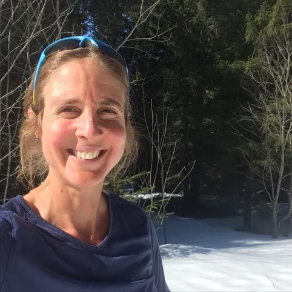

Caroline Chaverot
Nos invités
Caroline Chaverot, athlète franco-suisse née en 1976, est une figure emblématique du trail running.
Ancienne kayakiste, elle s'est illustrée en remportant des épreuves majeures comme l'Ultra-Trail du Mont-Blanc (UTMB) et
les championnats du monde de trail en 2016.
Son parcours est marqué par une quête constante de performance et de dépassement, malgré des défis liés à sa santé.
Le 16 avril, de 16h à 18h,
retrouvez Caroline Cheverot. Vous pourrez découvrir cette traileuse de renom, vous entretenir personnelement avec mais aussi assister à sa conférence “Le trail a changé ma vie”.